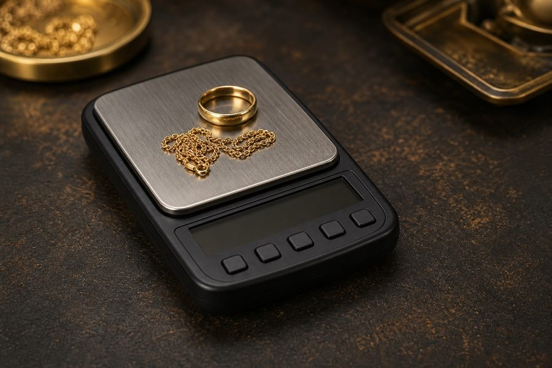
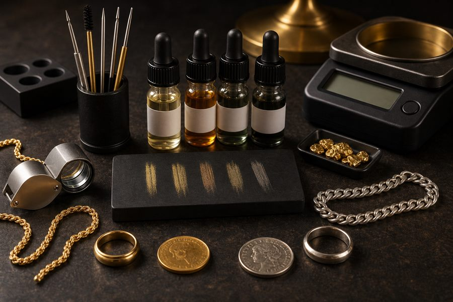

Calculator Guide
MetalsCalc Calculator Guide
A practical explanation of how MetalsCalc estimates precious metal scrap value from weight, purity, spot price, and payout percentage.
Open the free calculatorHow a spot price calculator works
A spot price calculator starts with the current market price for one troy ounce of metal. Gold, silver, and platinum are quoted by troy ounce, so the calculator first converts your weight into troy ounces, then multiplies by the metal purity and spot price.
If you are using grams, pennyweight, or another unit, the conversion matters. One troy ounce is about 31.1035 grams, and one pennyweight is one twentieth of a troy ounce.
How to estimate gold value with MetalsCalc
- Weigh the gold as accurately as possible.
- Select grams, dwt, or troy ounces.
- Choose the karat, such as 10K, 14K, 18K, 22K, or 24K.
- Confirm the current gold spot price, or edit it if you use a different quote.
- Calculate the estimated melt value and adjust payout percentage if you are making an offer.
Common jewelry karats are not pure gold. For example, 14K gold is commonly estimated around 58.3% gold, while 18K is commonly estimated around 75% gold. If a piece is not stamped or the stamp is questionable, testing may be needed before relying on the estimate.
How to estimate silver value with MetalsCalc
Silver pieces are usually described by fineness instead of karat. Common choices include .999 fine silver, .925 sterling silver, .900 coin silver, and .800 continental silver.
For a silver spot price calculator, enter the silver weight, choose the fineness, and calculate from the current silver spot price. If you are pricing mixed lots, calculate each purity group separately for a cleaner estimate.
Tools that improve your estimate

Digital gram scale
A small digital scale is one of the simplest ways to improve your estimate. More precise weight means a more reliable melt value.

Gold and silver testing
Testing helps confirm whether the stamped purity is accurate. Acid kits, electronic testers, and professional XRF testing all serve different levels of confidence.
Current spot quote
Spot prices move throughout the day. Use a current quote, then refresh or edit the spot price field before calculating larger lots.
What payout percentage means
Melt value is not always the same as an offer. A buyer may pay a percentage of melt value to account for refining costs, market movement, risk, and business margin. For example, if the estimated scrap value is $500 and the payout is 80%, the offer would be $400.
Quick glossary
- Spot price
- The current market price for one troy ounce of a metal.
- Troy ounce
- The precious-metals ounce used for gold, silver, and platinum pricing.
- Purity
- The percentage of the item that is the target metal, such as 58.3% gold for typical 14K.
- Melt value
- The estimated metal value before payout percentage, refining cost, or dealer margin.